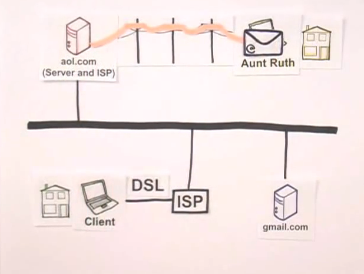

Taniya Prabhakar


Thoughts & Opinions
Wait...How Does the Internet Even Work?
Untangling Nets
03/28/2015
If you’re reading this, you’re using the internet! But do you know how it works? What is this ‘net’ people talk about…? Not many people understand how exactly the oh so useful internet actually works. Let’s break it down.
The internet is simply a wire in the ground. This wire could be a phone network, satellite, etc., which allows two computers to communicate with one another via a server. Webpages that you visit, such as Facebook.com, are all considered to be files on the server’s hard drive. Every server also has an Internet Protocol, or IP, address. This is what allows computers to find each other.
However, the computers/laptops we keep at home are not directly connected to the internet. We use Internet Service Providers (ISPs), which makes our devices ‘clients'. Our computers break down the packages that are sent between these sources to actually try to make sense of them. These packets of information are sent between you emailing your friend, and them receiving it.
As a fellow visual learner, here's an image that may help conceptualize this better.
